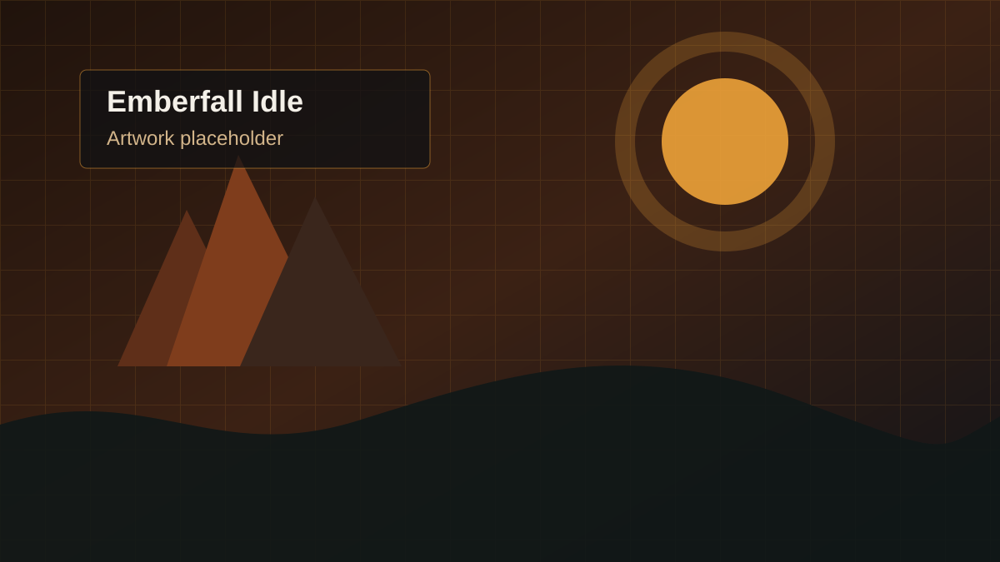

Browser idle RPG
Emberfall Idle
A classic fantasy idle RPG with character creation, races, classes, combat skills, professions, quests, dungeons, gear, inventory management, and deterministic offline progression.
- Combat and crafting skills
- Quests, zones, and dungeons
- Active and offline progress